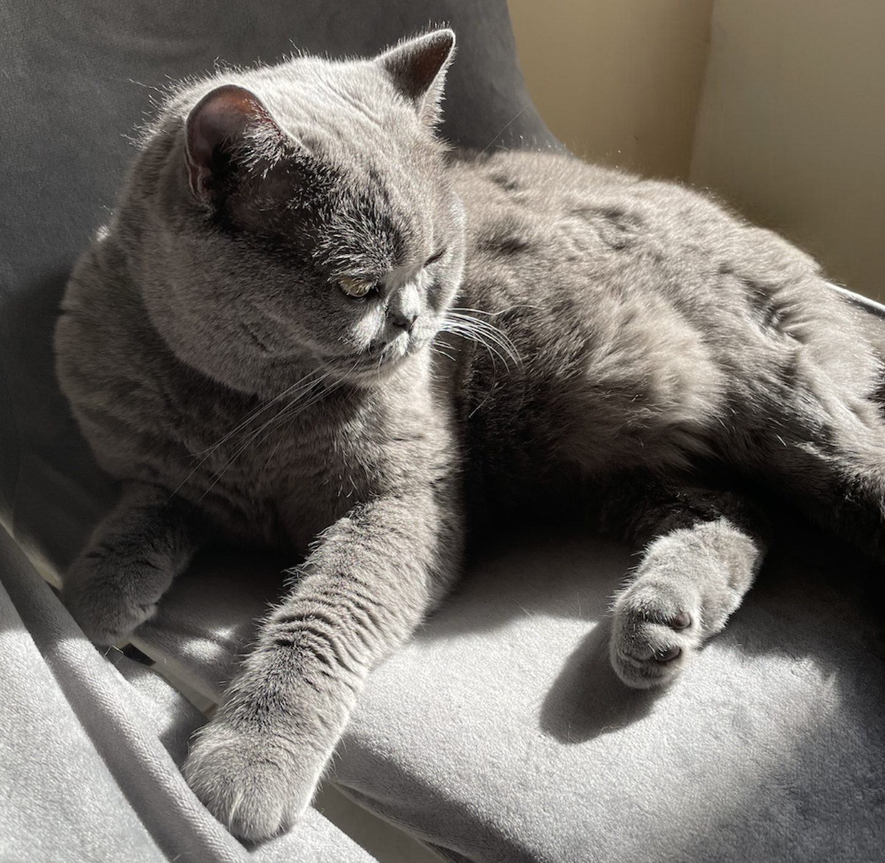
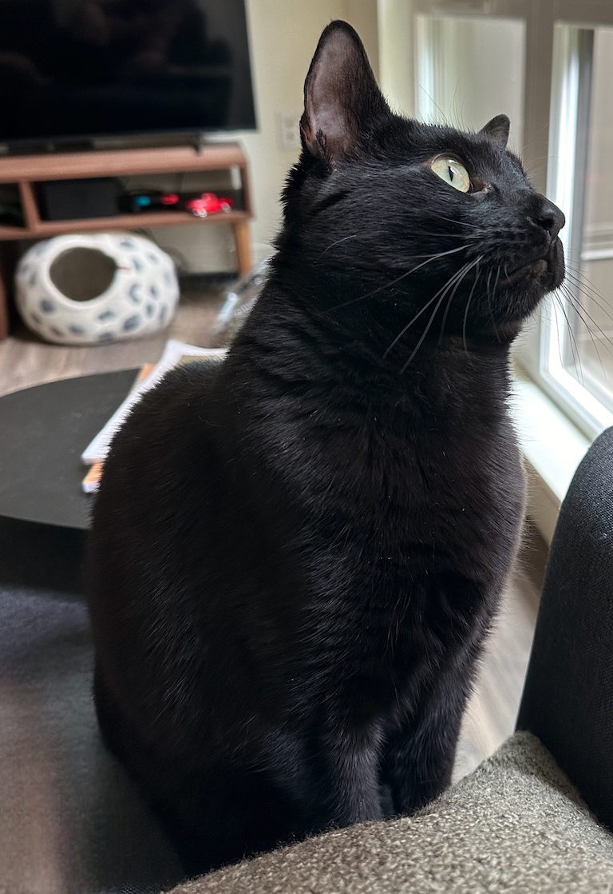

Un poco sobre mí
Empecé en UX porque me fascina entender cómo piensa la gente, qué necesita y por qué las cosas funcionan (o no). Con formación en biología e informática, he estudiado sistemas complejos: humanos, digitales, e intermedios. Soy analítico y me encanta ser creativo, por eso el diseño UX tiene sentido para mí. Disfruto hacer que los sistemas funcionen mejor, y no me asusta probar, romper y reconstruir hasta que lo logre.
Fuera del diseño, me encanta probar cosas nuevas: comida, deportes, incluso tejer (siempre tengo uno o dos... o tres proyectos en marcha). He vivido en Seattle, Nueva York y Miami, donde me siento como en casa de diferentes maneras. También me encantan los idiomas y hablo tres y medio (¡ya casi llego al cuarto!). Soy una persona curiosa, motivada y siempre en busca de cómo mejorar las experiencias de los usuarios, los equipos y del mundo que me rodea.
Proyectos personales
¡Y mis compañeros de trabajo!

